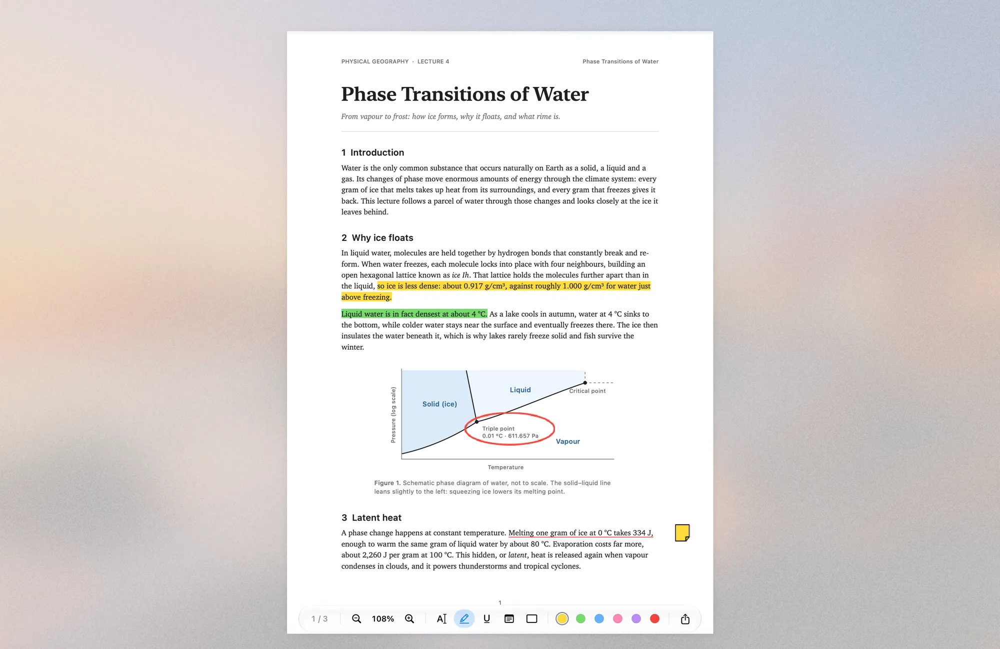
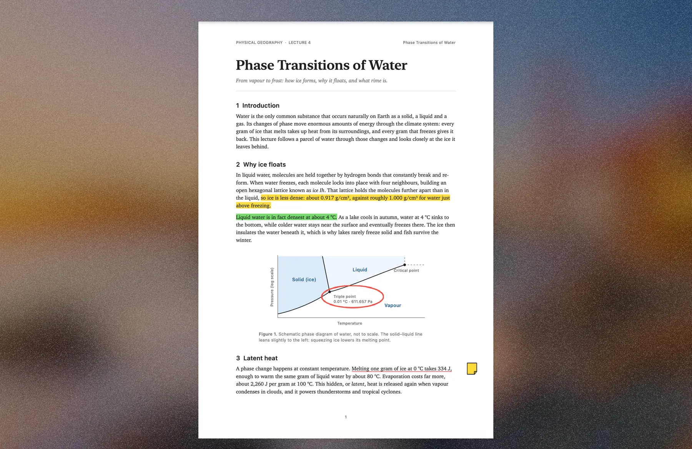
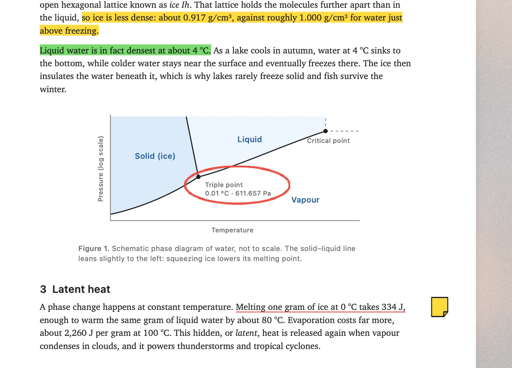
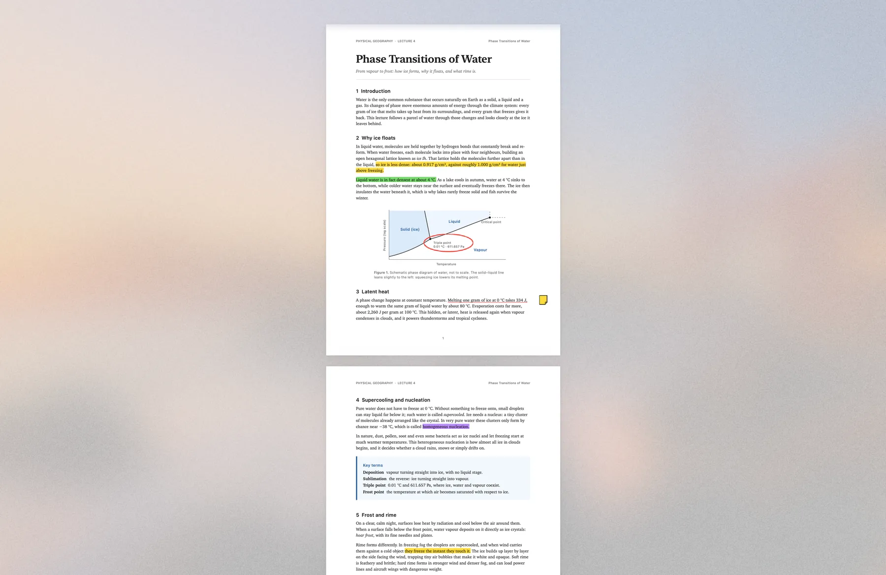
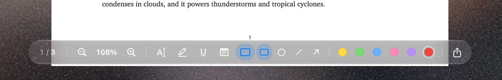

Rime
Only the page. The rest freezes over.

- Frost from your wallpaper. Your own desktop picture, blurred and brightened with a fine grain, so the ice always matches the Mac.
- Freezes, then melts. Ice grows in from the screen edges when I start reading and melts away when I switch apps.
- Everything goes quiet. Widgets, icons, the Dock and the menu bar disappear under it. The controls fade as soon as I read.
- Preview’s tools, kept. Pinch to zoom, highlight, underline, notes, shapes and export, saved as standard PDF markup.




Built with AppKit, PDFKit, SwiftUI, Core Image and Core Animation. Screens show demo lecture notes.
Next: Cockpit